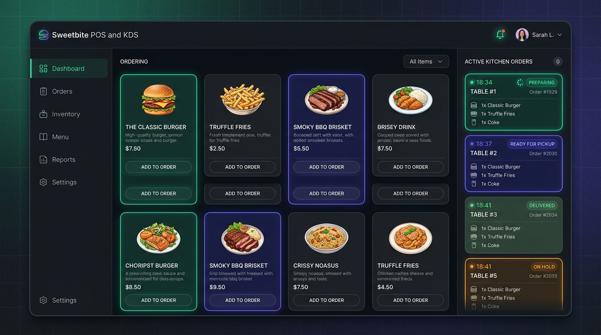

sweetbite.pos/kds
Real-Time

Sweetbite Food POS & Kitchen Display System
Restaurant operations, redesigned.
A real-time POS and kitchen management platform connecting front-of-house table ordering with kitchen preparation lines, eliminating paper ticket confusion and wait delays.
Sub-second live order synchronization across stations
Dedicated Kitchen Display System (KDS) with audio chimes
Dynamic menu management with variant and stock controls
Touch-optimized UI designed for high-paced shift work
Next.js 14
TypeScript
Supabase Realtime
PostgreSQL
Tailwind CSS